A concrete case study of using a coding agent for undocumented protocol reverse engineering rather than application code: port scanning, brute-forcing a command set, and cracking a checksum without prior security engineering expertise
The persistence bug forced a Windows VM plus TCP proxy detour before the checksum could be cracked by brute force; this reads as a general pattern for black-box protocol inference from input/output pairs, not just this one phone (ours).
“three senior software engineers and a Claude uh sorry, ChatGPT at the time, they couldn't figure out how to make it work”
said at 02:08“when you send a random string to the phone, it returns uh this ER and then the string itself”
said at 05:44“it turned out that most of them returned error codes, but 80 of them returned actual like something else, meaning they're actual valid commands”
said at 06:16“It set up a TCP proxy on the Mac so that the uh traffic from the virtual machine”
said at 09:22“checksum turned out to be only uh one byte. So, it's something that you can brute force as well”
said at 10:56“it actually like managed to find it and then it confirmed it uh by running uh by running more values through it”
said at 11:58“it's not just it made it 10 times faster, it just made it possible because I'm not a security security engineer whatsoever”
said at 15:09“I used Eleven Labs our corporate tokens. So, I I yeah, I think it was in order of between 10 and 100 dollars”
said at 16:33The persistence-and-checksum arc is a fairly clean demonstration of agent-driven binary-protocol inference from black-box input/output pairs rather than static analysis -- worth watching whether this kind of workflow gets formalized into a general-purpose reverse-engineering skill/tool rather than a one-off build (ours).
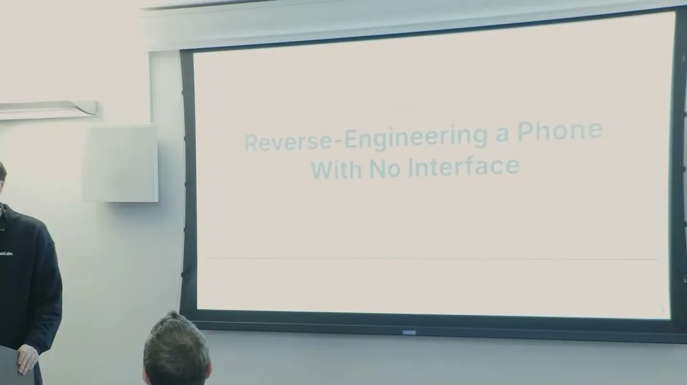
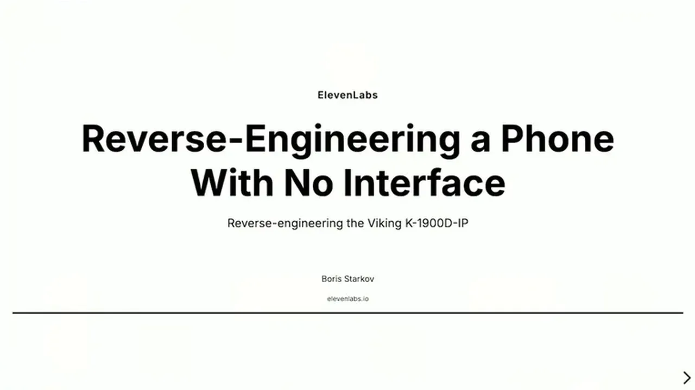
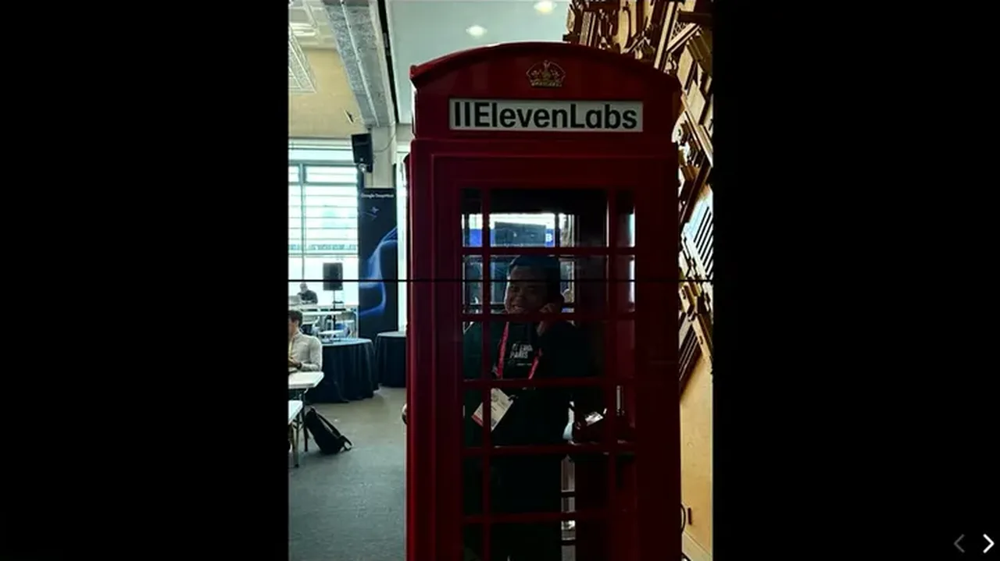
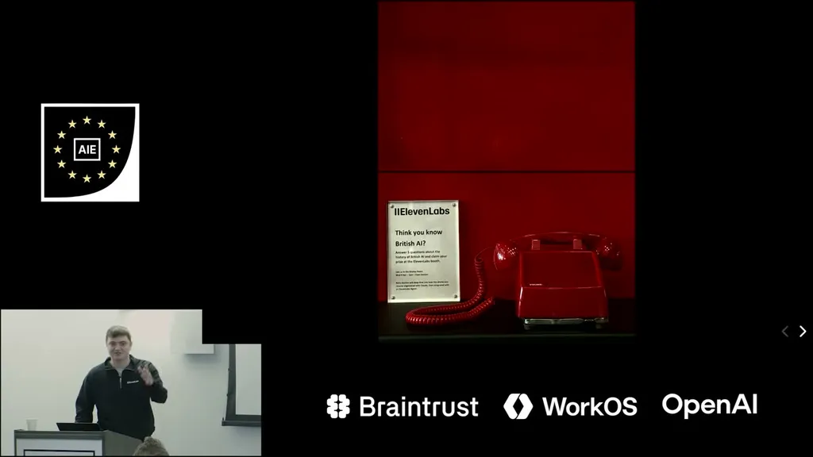
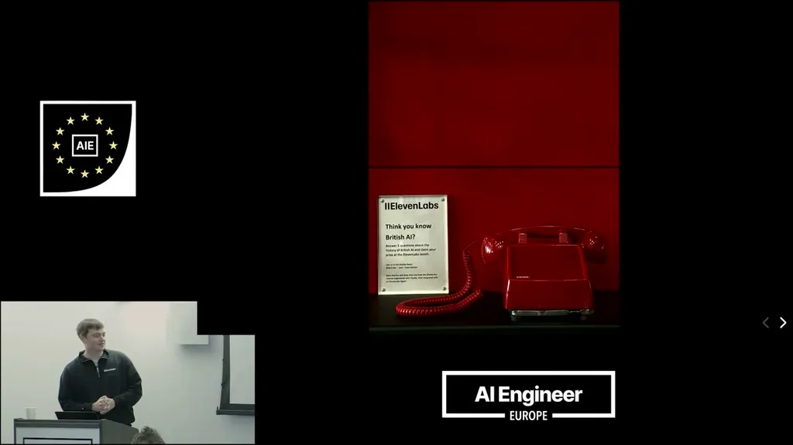
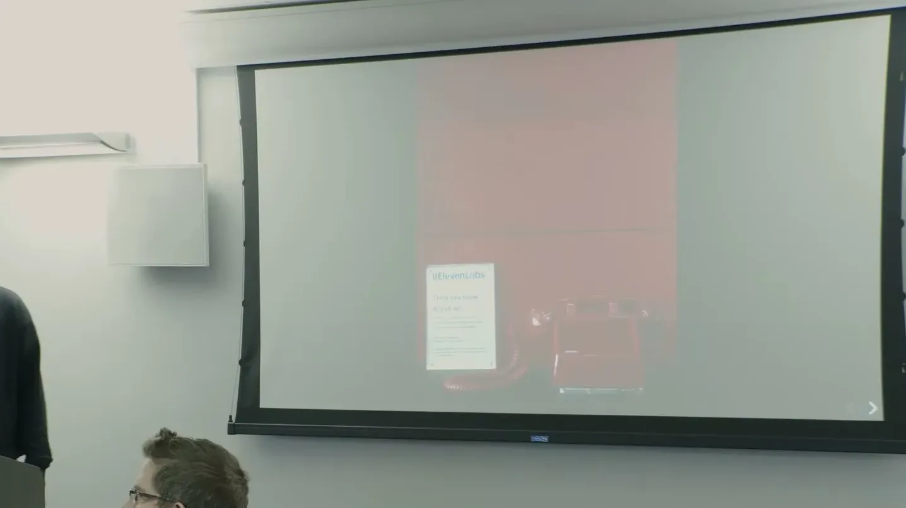
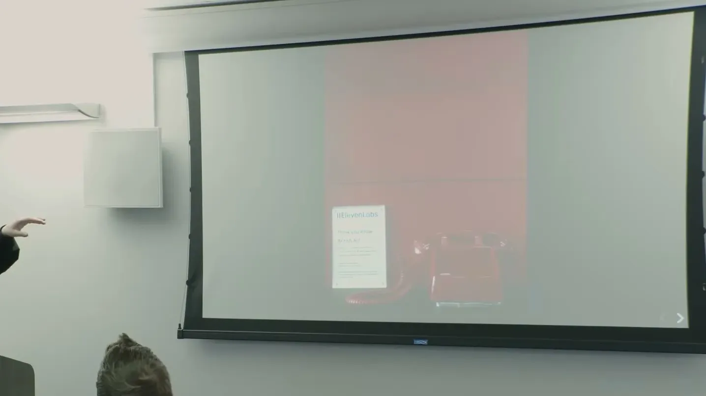
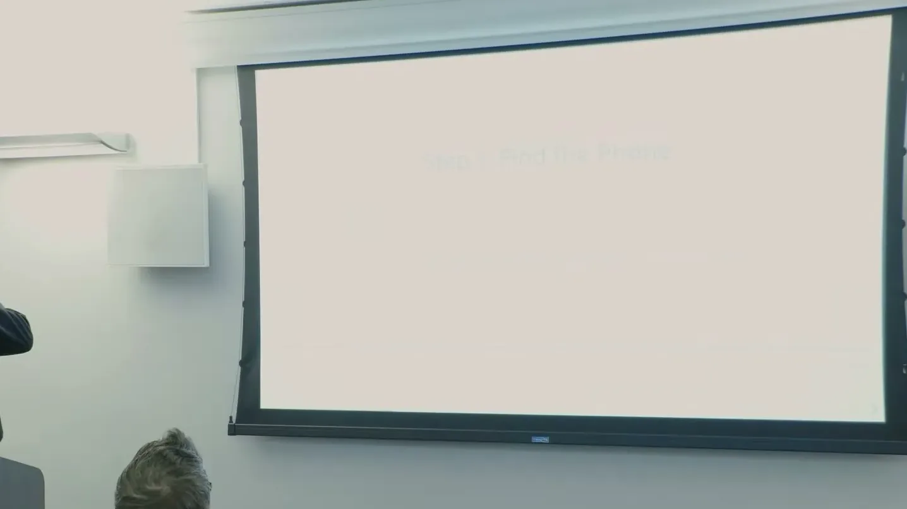
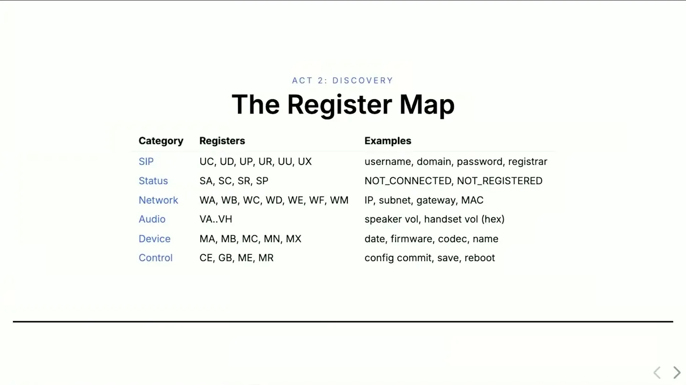
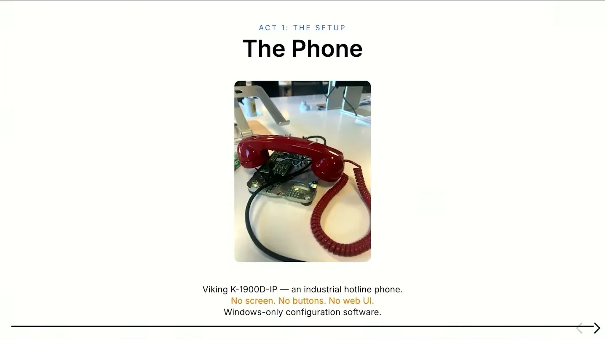
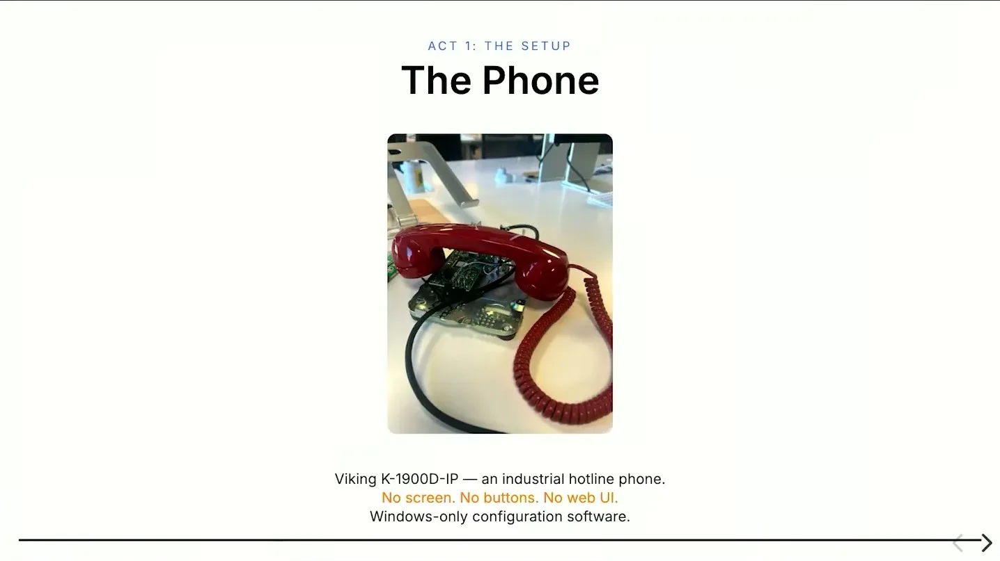
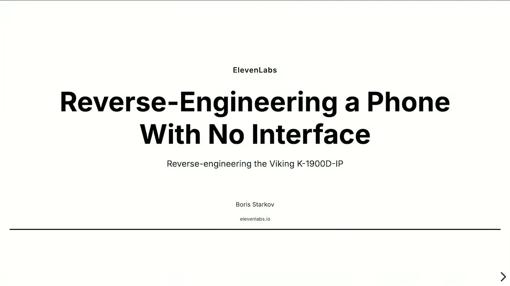
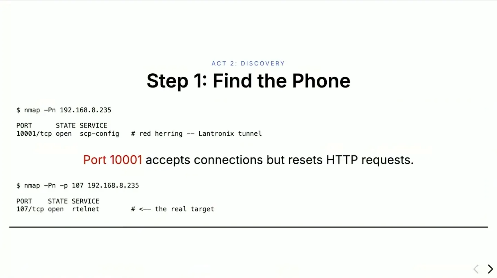
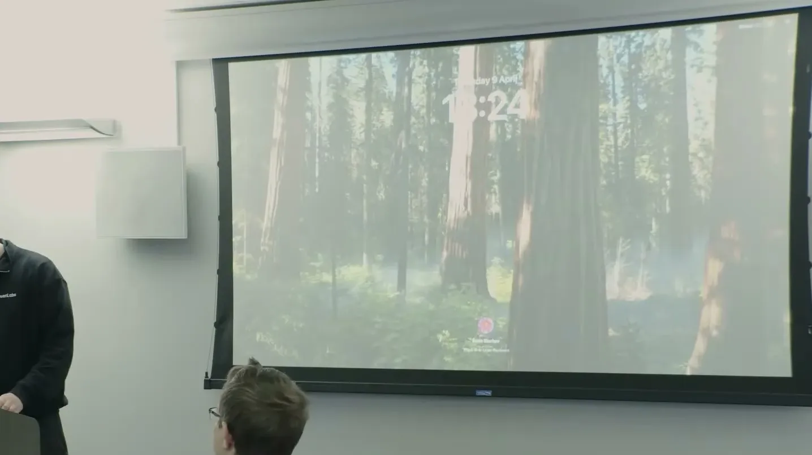
| Stance | Claim | t |
|---|---|---|
| asserts | Three senior software engineers plus ChatGPT could not get the Windows-XP-only phone working on Mac hardware over the course of a year. | 02:08 |
| asserts | Claude Code discovered the phone used two-letter command codes by noticing invalid strings returned an error echo of the input. | 05:44 |
| asserts | Brute-forcing every two-letter combination found about 80 valid commands out of the phone's command set. | 06:16 |
| asserts | To find the missing persistence command, Claude Code set up a Windows VM running vendor software proxied through a Mac TCP proxy to intercept and log its traffic to the phone. | 09:22 |
| asserts | The captured persistence command's payload made sense except for a one-byte checksum, which was brute-forceable and turned out to be a simple one-byte addition. | 10:56 |
| asserts | Claude Code confirmed the checksum formula by testing additional values against the phone's actual responses. | 11:58 |
| asserts | The presenter, not a security engineer, says Claude Code didn't just speed up the reverse engineering, it made the project possible at all for him. | 15:09 |
| asserts | The presenter estimates the reverse engineering used between $10 and $100 in Eleven Labs corporate tokens, and packaged the cracked protocol as an open-sourced Claude Code skill. | 16:33 |
Machine-readable copy embedded in this page (script#ontology) and in the corpus ontology.